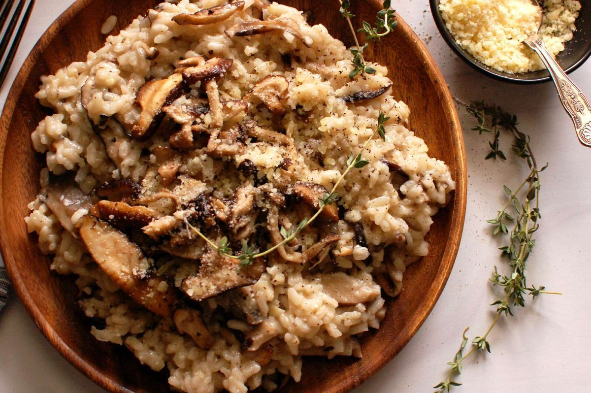

Home
Risotto

Italian yum
This is one of my go to meals when I want to make people happy. It's conforting, and whoever you make it for will definitely fall in love with you.
The recipe is pretty quick to make, 45 min tops!
Bon appetit!
Ingredients
- Parsley
- salt
- olive oil
- pocini mushrooms
- onion
- carnaroli rice
- white wine
- butter
- parmigiano reggiano
- veggie stock
Recipe
- MUSHROOMS! Place the large fry pan on your stove at medium heat with oil add the mushrooms, stirring them through the oil and let simmer.
- Add a sprinkle of salt and half of the freshly cut up parsley then stir through well.
- Cook for approx. 15 minutes, stirring every few minutes with a wooden spoon to make sure they are soft and juicy.
- Get a large pot or deep pan and put on the stove again at a medium-low heat.
- Add the chopped onion and leave to simmer and turn lightly golden. Mix them gently through the oil using a wooden spoon and cook for approx. 10 minutes.
- Next, add the rice to your pan (with onions) and stir them through (always using a wooden spoon!). The rice needs to lightly toast in the pan for approx. 4 minutes – stir frequently!
- After ¾ minutes, add ½ glass wine and keep an eye on the time. From this point, cook according to length of time noted on packet – tasting to be sure of course!
- Mix the rice with the wine by stirring it through and from this point on, you want the rice to stay moist so once this evaporates, start adding the vegetable stock, one ladle at a time.
- Once the stock is added, leave it to reduce before adding another portion. The key step: KEEP ON STIRRING during the entire process and do not increase the heat, the rice is best cooked gently and slowly.
- A few minutes prior to the final (recommended) cooking time, add the mushrooms (leaving a small portion to the side) and add another ½ ladle of stock.
- Mix through, then add more stock as you need to because the mushrooms will absorb the liquid quite quickly. Keep stirring!
- Add the butter immediately and while this is melting, mix through the grated parmigiano reggiano (feel free to add extra too!). Stir until both have melted completely…then serve!
- ...voila!